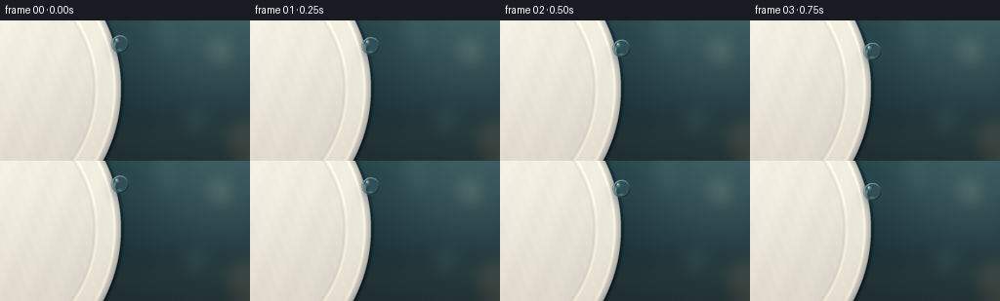
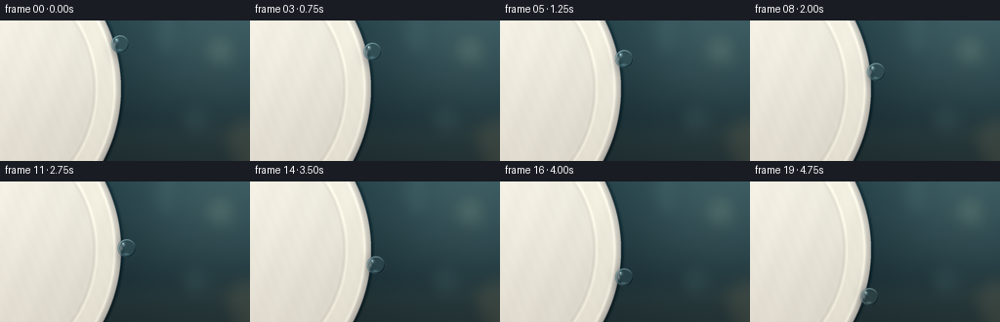

CODING AGENTS AS PIXEL WORLD MODELS
traex/GPT-5.6-Sol · mechanics_0051
点击播放 · 原生 RGB 像素
逐轮保存的候选
回放视频、检查图与代码变化。
每份候选均可单独播放。实际图片检查记录在下方工具轨迹中。
候选 01播放与检查图
点击播放 · 原生 RGB 像素


展开代码变化
--- 上一保存版本
+++ 本次保存版本
@@ -0,0 +1,170 @@
+from pathlib import Path
+import json
+import numpy as np
+from PIL import Image, ImageDraw, ImageFilter
+import artifact_io
+
+CASE_DIR = Path(__file__).resolve().parent
+SPEC = json.loads((CASE_DIR / 'task_spec.json').read_text())
+W, H, N = SPEC['width'], SPEC['height'], SPEC['frames']
+S = 4
+w, h = W*S, H*S
+rng = np.random.default_rng(51017)
+
+def smoothstep(a, b, x):
+ q = np.clip((x-a)/(b-a), 0.0, 1.0)
+ return q*q*(3-2*q)
+
+def ellipse_blur_layer(ellipses, blur=8):
+ layer = Image.new('RGBA', (w,h), (0,0,0,0))
+ d = ImageDraw.Draw(layer)
+ for box, fill in ellipses:
+ d.ellipse(tuple(int(v*S) for v in box), fill=fill)
+ return np.asarray(layer.filter(ImageFilter.GaussianBlur(blur*S))).astype(np.float32)
+
+# Coordinates are kept in final-pixel units while evaluating at supersampled resolution.
+yy, xx = np.mgrid[0:h, 0:w].astype(np.float32)
+X, Y = xx/S, yy/S
+
+# A dark, shallow-focus kitchen background with soft daylight from upper right.
+yn = Y/H
+xn = X/W
+base = np.zeros((h,w,3), np.float32)
+base[:,:,0] = 21 + 13*(1-yn) + 4*xn
+base[:,:,1] = 38 + 22*(1-yn) + 6*xn
+base[:,:,2] = 43 + 24*(1-yn) + 7*xn
+# diagonal window glow
+light = np.exp(-((X-225)**2/(2*66**2) + (Y-7)**2/(2*61**2)))
+base += light[:,:,None]*np.array([24,29,27], np.float32)
+# subtle counter horizon
+base += smoothstep(96, 124, Y)[:,:,None]*np.array([8,5,2],np.float32)
+
+# Out-of-focus bokeh and vertical shapes, held still over all frames.
+bokeh = ellipse_blur_layer([
+ ((205,11,245,51),(174,188,154,42)), ((181,82,220,121),(112,152,143,31)),
+ ((226,94,279,148),(211,169,105,27)), ((154,-17,186,42),(119,167,173,24)),
+ ((199,58,211,70),(225,218,174,33)), ((238,49,252,63),(135,197,188,26))
+], blur=9)
+a = bokeh[:,:,3:4]/255
+base = base*(1-a) + bokeh[:,:,:3]*a
+# Fine restrained film grain (fixed so the world does not flicker).
+noise = rng.normal(0, 1.15, (h,w,1)).astype(np.float32)
+base += noise
+
+# Plate geometry: huge cream ceramic plate, almost front-on, cropped at left.
+cx, cy, rx, ry = -20.5, 70.0, 144.5, 151.0
+rho = np.sqrt(((X-cx)/rx)**2 + ((Y-cy)/ry)**2)
+plate = rho <= 1.0
+# Face lighting, ceramic glaze, warm lower falloff.
+face = np.empty_like(base)
+face[:,:,0] = 218 + 21*(1-X/W) - 13*yn
+face[:,:,1] = 216 + 20*(1-X/W) - 15*yn
+face[:,:,2] = 205 + 18*(1-X/W) - 15*yn
+face += (7*np.exp(-((X-41)**2/(2*76**2)+(Y-22)**2/(2*47**2))))[:,:,None]
+# Hand-made ceramic micro mottling.
+cer = (1.5*np.sin(X*.19+Y*.07) + .8*np.sin(X*.57-Y*.22))[:,:,None]
+face += cer
+scene = base.copy()
+scene[plate] = face[plate]
+
+# Glazed concentric rim: broad raised bead, thin inner groove and outer rolled edge.
+# Bands are modeled analytically, giving smooth arcs and a recognizable plate silhouette.
+rim_raise = smoothstep(.765,.835,rho) * (1-smoothstep(.927,.972,rho))
+scene += rim_raise[:,:,None]*np.array([7,7,5],np.float32)
+inner_groove = np.exp(-((rho-.807)/.010)**2) * plate
+scene -= inner_groove[:,:,None]*np.array([12,12,11],np.float32)
+inner_glint = np.exp(-((rho-.828)/.008)**2) * plate
+scene += inner_glint[:,:,None]*np.array([13,13,11],np.float32)
+outer_shade = smoothstep(.938,1.0,rho) * plate
+scene -= outer_shade[:,:,None]*np.array([36,35,31],np.float32)
+outer_glaze = np.exp(-((rho-.954)/.010)**2) * plate
+scene += outer_glaze[:,:,None]*np.array([24,24,21],np.float32)
+# Dark hairline exactly at the ceramic's edge and a soft cast shadow onto background.
+edge_shadow = np.exp(-((rho-1.009)/.013)**2) * (rho >= 1)
+scene -= edge_shadow[:,:,None]*np.array([18,18,16],np.float32)
+edge_line = np.exp(-((rho-.997)/.0045)**2)
+scene -= edge_line[:,:,None]*np.array([31,30,26],np.float32)
+
+# A few stationary pinprick glaze imperfections, very subtle and sparse.
+for px, py, pr, val in [(49,44,.45,-8),(83,97,.33,-7),(31,120,.38,-5),(104,65,.28,-6)]:
+ spot=np.exp(-((X-px)**2+(Y-py)**2)/(2*pr**2))[:,:,None]
+ scene += spot*val
+
+scene = np.clip(scene,0,255)
+
+def boundary_x(y):
+ q = np.clip(1.0 - ((y-cy)/ry)**2, 0, 1)
+ return cx + rx*np.sqrt(q)
+
+def add_droplet(scene0, t):
+ im = scene0.copy()
+ # Ease-in then gravity-like acceleration, with tiny adhesion wobble.
+ p = .18*t + .82*(t**1.48)
+ dy = 24.0 + 94.0*p
+ bx = boundary_x(dy)
+ radius = 9.15 + .22*np.sin(np.pi*t)
+ dx = bx + radius*.63 + .25*np.sin(2*np.pi*t)
+
+ # A delicate wet track left on the glaze behind the bead.
+ if t > .02:
+ y_start = 23.0
+ y_end = dy - radius*.63
+ pathmask = np.zeros((h,w), np.float32)
+ valid = (Y >= y_start) & (Y <= y_end)
+ pathx = boundary_x(Y)
+ dist = np.abs(X-(pathx-.35))
+ pathmask = np.exp(-(dist/.48)**2) * valid
+ # strongest near the moving drop, fading toward the starting point
+ fade = np.clip((Y-y_start+15)/(max(y_end-y_start,1)+15),0,1)
+ pathmask *= (.15 + .38*fade)
+ im += pathmask[:,:,None]*np.array([26,28,26],np.float32)
+
+ # Contact shadow projected onto the ceramic just behind the bead.
+ sh = np.exp(-(((X-(dx-4.0))/5.3)**2 + ((Y-(dy+2.2))/8.4)**2)/2)
+ sh *= plate
+ im -= sh[:,:,None]*np.array([38,36,32],np.float32)
+
+ u=(X-dx)/radius; v=(Y-dy)/radius
+ rr=np.sqrt(u*u+v*v)
+ mask=rr<=1
+ # Refract/magnify a patch of the underlying scene through the spherical lens.
+ srcx=np.clip(np.rint((dx + (X-dx)*.38)*S).astype(np.int32),0,w-1)
+ srcy=np.clip(np.rint((dy + (Y-dy)*.38)*S).astype(np.int32),0,h-1)
+ refr=scene0[srcy,srcx].copy()
+ # Water has a faint cool tint and a luminous center.
+ thickness=np.sqrt(np.clip(1-rr*rr,0,1))
+ refr = refr*.86 + np.array([21,27,28],np.float32)
+ refr += thickness[:,:,None]*np.array([6,9,10],np.float32)
+ # Fresnel: stronger reflection/opacity at the boundary.
+ fres=np.clip((rr-.66)/.34,0,1)**1.5
+ alpha=(.48 + .42*fres)*mask
+ im = im*(1-alpha[:,:,None]) + refr*alpha[:,:,None]
+
+ # Bright outer meniscus upper-left, dark lower-right crescent and caustic lower rim.
+ ring=np.exp(-((rr-.91)/.055)**2)*mask
+ directional=np.clip(.55-.48*u-.42*v,0,1)
+ im += (ring*directional)[:,:,None]*np.array([76,85,84],np.float32)
+ darkside=ring*np.clip(.25+.65*u+.73*v,0,1)
+ im -= darkside[:,:,None]*np.array([43,48,47],np.float32)
+ lower_caustic=np.exp(-((u+.08)**2/.31**2+(v-.67)**2/.13**2))*mask
+ im += lower_caustic[:,:,None]*np.array([34,43,44],np.float32)
+ # Elliptical studio highlight plus a tiny hard glint.
+ hi=np.exp(-(((u+.38)/.24)**2+((v+.43)/.31)**2)*2.0)*mask
+ glint=np.exp(-(((u+.43)/.075)**2+((v+.50)/.09)**2)*2.0)*mask
+ im += hi[:,:,None]*np.array([86,94,92],np.float32)
+ im += glint[:,:,None]*np.array([118,124,119],np.float32)
+ # Tiny contact meniscus ties the sphere visibly to the edge without deforming it.
+ neck=np.exp(-(((X-(bx+.35))/1.35)**2+((Y-dy)/3.1)**2)*1.3)
+ im = im*(1-(.42*neck)[:,:,None]) + np.array([190,202,198],np.float32)*(.42*neck)[:,:,None]
+ return np.clip(im,0,255)
+
+frames=[]
+for i in range(N):
+ t=i/(N-1)
+ frame=add_droplet(scene,t)
+ # Supersampling gives ceramic curves and droplet silhouette clean antialiasing.
+ pil=Image.fromarray(frame.astype(np.uint8),'RGB').resize((W,H),Image.Resampling.LANCZOS)
+ frames.append(np.asarray(pil,dtype=np.uint8))
+frames=np.stack(frames)
+artifact_io.save(frames, CASE_DIR)
+print(f'saved {frames.shape} RGB frames to {CASE_DIR}')
可观测工具轨迹
实际执行的命令与返回图片。
命令 1exit 0
/bin/bash -lc "find . -maxdepth 2 -type f -printf '%p\\n' | sort && printf '\\n--- binaries ---\\n' && command -v ffmpeg || true && command -v python3 || true"
命令 2exit 0
/bin/bash -lc "cat prompt.txt && printf '\\n---RULES---\\n' && cat GENERATION_RULES.md && printf '\\n---SPEC---\\n' && cat task_spec.json"
命令 3exit 0
/bin/bash -lc "sed -n '1,240p' artifact_io.py"
命令 4exit 0
/bin/bash -lc "cat > generate.py <<'PY'
from pathlib import Path
import json
import numpy as np
from PIL import Image, ImageDraw, ImageFilter
import artifact_io
CASE_DIR = Path(__file__).resolve().parent
SPEC = json.loads((CASE_DIR / 'task_spec.json').read_text())
W, H, N = SPEC['width'], SPEC['height'], SPEC['frames']
S = 4
w, h = W*S, H*S
rng = np.random.default_rng(51017)
def smoothstep(a, b, x):
q = np.clip((x-a)/(b-a), 0.0, 1.0)
return q*q*(3-2*q)
def ellipse_blur_layer(ellipses, blur=8):
layer = Image.new('RGBA', (w,h), (0,0,0,0))
d = ImageDraw.Draw(layer)
for box, fill in ellipses:
d.ellipse(tuple(int(v*S) for v in box), fill=fill)
return np.asarray(layer.filter(ImageFilter.GaussianBlur(blur*S))).astype(np.float32)
# Coordinates are kept in final-pixel units while evaluating at supersampled resolution.
yy, xx = np.mgrid[0:h, 0:w].astype(np.float32)
X, Y = xx/S, yy/S
# A dark, shallow-focus kitchen background with soft daylight from upper right.
yn = Y/H
xn = X/W
base = np.zeros((h,w,3), np.float32)
base[:,:,0] = 21 + 13*(1-yn) + 4*xn
base[:,:,1] = 38 + 22*(1-yn) + 6*xn
base[:,:,2] = 43 + 24*(1-yn) + 7*xn
# diagonal window glow
light = np.exp(-((X-225)**2/(2*66**2) + (Y-7)**2/(2*61**2)))
base += light[:,:,None]*np.array([24,29,27], np.float32)
# subtle counter horizon
base += smoothstep(96, 124, Y)[:,:,None]*np.array([8,5,2],np.float32)
# Out-of-focus bokeh and vertical shapes, held still over all frames.
bokeh = ellipse_blur_layer([
((205,11,245,51),(174,188,154,42)), ((181,82,220,121),(112,152,143,31)),
((226,94,279,148),(211,169,105,27)), ((154,-17,186,42),(119,167,173,24)),
((199,58,211,70),(225,218,174,33)), ((238,49,252,63),(135,197,188,26))
], blur=9)
a = bokeh[:,:,3:4]/255
base = base*(1-a) + bokeh[:,:,:3]*a
# Fine restrained film grain (fixed so the world does not flicker).
noise = rng.normal(0, 1.15, (h,w,1)).astype(np.float32)
base += noise
# Plate geometry: huge cream ceramic plate, almost front-on, cropped at left.
cx, cy, rx, ry = -20.5, 70.0, 144.5, 151.0
rho = np.sqrt(((X-cx)/rx)**2 + ((Y-cy)/ry)**2)
plate = rho <= 1.0
# Face lighting, ceramic glaze, warm lower falloff.
face = np.empty_like(base)
face[:,:,0] = 218 + 21*(1-X/W) - 13*yn
face[:,:,1] = 216 + 20*(1-X/W) - 15*yn
face[:,:,2] = 205 + 18*(1-X/W) - 15*yn
face += (7*np.exp(-((X-41)**2/(2*76**2)+(Y-22)**2/(2*47**2))))[:,:,None]
# Hand-made ceramic micro mottling.
cer = (1.5*np.sin(X*.19+Y*.07) + .8*np.sin(X*.57-Y*.22))[:,:,None]
face += cer
scene = base.copy()
scene[plate] = face[plate]
# Glazed concentric rim: broad raised bead, thin inner groove and outer rolled edge.
# Bands are modeled analytically, giving smooth arcs and a recognizable plate silhouette.
rim_raise = smoothstep(.765,.835,rho) * (1-smoothstep(.927,.972,rho))
scene += rim_raise[:,:,None]*np.array([7,7,5],np.float32)
inner_groove = np.exp(-((rho-.807)/.010)**2) * plate
scene -= inner_groove[:,:,None]*np.array([12,12,11],np.float32)
inner_glint = np.exp(-((rho-.828)/.008)**2) * plate
scene += inner_glint[:,:,None]*np.array([13,13,11],np.float32)
outer_shade = smoothstep(.938,1.0,rho) * plate
scene -= outer_shade[:,:,None]*np.array([36,35,31],np.float32)
outer_glaze = np.exp(-((rho-.954)/.010)**2) * plate
scene += outer_glaze[:,:,None]*np.array([24,24,21],np.float32)
# Dark hairline exactly at the ceramic's edge and a soft cast shadow onto background.
edge_shadow = np.exp(-((rho-1.009)/.013)**2) * (rho >= 1)
scene -= edge_shadow[:,:,None]*np.array([18,18,16],np.float32)
edge_line = np.exp(-((rho-.997)/.0045)**2)
scene -= edge_line[:,:,None]*np.array([31,30,26],np.float32)
# A few stationary pinprick glaze imperfections, very subtle and sparse.
for px, py, pr, val in [(49,44,.45,-8),(83,97,.33,-7),(31,120,.38,-5),(104,65,.28,-6)]:
spot=np.exp(-((X-px)**2+(Y-py)**2)/(2*pr**2))[:,:,None]
scene += spot*val
scene = np.clip(scene,0,255)
def boundary_x(y):
q = np.clip(1.0 - ((y-cy)/ry)**2, 0, 1)
return cx + rx*np.sqrt(q)
def add_droplet(scene0, t):
im = scene0.copy()
# Ease-in then gravity-like acceleration, with tiny adhesion wobble.
p = .18*t + .82*(t**1.48)
dy = 24.0 + 94.0*p
bx = boundary_x(dy)
radius = 9.15 + .22*np.sin(np.pi*t)
dx = bx + radius*.63 + .25*np.sin(2*np.pi*t)
# A delicate wet track left on the glaze behind the bead.
if t > .02:
y_start = 23.0
y_end = dy - radius*.63
pathmask = np.zeros((h,w), np.float32)
valid = (Y >= y_start) & (Y <= y_end)
pathx = boundary_x(Y)
dist = np.abs(X-(pathx-.35))
pathmask = np.exp(-(dist/.48)**2) * valid
# strongest near the moving drop, fading toward the starting point
fade = np.clip((Y-y_start+15)/(max(y_end-y_start,1)+15),0,1)
pathmask *= (.15 + .38*fade)
im += pathmask[:,:,None]*np.array([26,28,26],np.float32)
# Contact shadow projected onto the ceramic just behind the bead.
sh = np.exp(-(((X-(dx-4.0))/5.3)**2 + ((Y-(dy+2.2))/8.4)**2)/2)
sh *= plate
im -= sh[:,:,None]*np.array([38,36,32],np.float32)
u=(X-dx)/radius; v=(Y-dy)/radius
rr=np.sqrt(u*u+v*v)
mask=rr<=1
# Refract/magnify a patch of the underlying scene through the spherical lens.
srcx=np.clip(np.rint((dx + (X-dx)*.38)*S).astype(np.int32),0,w-1)
srcy=np.clip(np.rint((dy + (Y-dy)*.38)*S).astype(np.int32),0,h-1)
refr=scene0[srcy,srcx].copy()
# Water has a faint cool tint and a luminous center.
thickness=np.sqrt(np.clip(1-rr*rr,0,1))
refr = refr*.86 + np.array([21,27,28],np.float32)
refr += thickness[:,:,None]*np.array([6,9,10],np.float32)
# Fresnel: stronger reflection/opacity at the boundary.
fres=np.clip((rr-.66)/.34,0,1)**1.5
alpha=(.48 + .42*fres)*mask
im = im*(1-alpha[:,:,None]) + refr*alpha[:,:,None]
# Bright outer meniscus upper-left, dark lower-right crescent and caustic lower rim.
ring=np.exp(-((rr-.91)/.055)**2)*mask
directional=np.clip(.55-.48*u-.42*v,0,1)
im += (ring*directional)[:,:,None]*np.array([76,85,84],np.float32)
darkside=ring*np.clip(.25+.65*u+.73*v,0,1)
im -= darkside[:,:,None]*np.array([43,48,47],np.float32)
lower_caustic=np.exp(-((u+.08)**2/.31**2+(v-.67)**2/.13**2))*mask
im += lower_caustic[:,:,None]*np.array([34,43,44],np.float32)
# Elliptical studio highlight plus a tiny hard glint.
hi=np.exp(-(((u+.38)/.24)**2+((v+.43)/.31)**2)*2.0)*mask
glint=np.exp(-(((u+.43)/.075)**2+((v+.50)/.09)**2)*2.0)*mask
im += hi[:,:,None]*np.array([86,94,92],np.float32)
im += glint[:,:,None]*np.array([118,124,119],np.float32)
# Tiny contact meniscus ties the sphere visibly to the edge without deforming it.
neck=np.exp(-(((X-(bx+.35))/1.35)**2+((Y-dy)/3.1)**2)*1.3)
im = im*(1-(.42*neck)[:,:,None]) + np.array([190,202,198],np.float32)*(.42*neck)[:,:,None]
return np.clip(im,0,255)
frames=[]
for i in range(N):
t=i/(N-1)
frame=add_droplet(scene,t)
# Supersampling gives ceramic curves and droplet silhouette clean antialiasing.
pil=Image.fromarray(frame.astype(np.uint8),'RGB').resize((W,H),Image.Resampling.LANCZOS)
frames.append(np.asarray(pil,dtype=np.uint8))
frames=np.stack(frames)
artifact_io.save(frames, CASE_DIR)
print(f'saved {frames.shape} RGB frames to {CASE_DIR}')
PY
python3 generate.py"命令 5exit 0
/bin/bash -lc "python3 - <<'PY'
import numpy as np
from pathlib import Path
z=np.load('pixels.npz')['pixels']
print(z.shape,z.dtype)
# infer moving pixel counts
p=z.transpose(2,0,1)
for i in range(1,len(p)):
print(i, np.count_nonzero(p[i]"'!=p[i-1]))
PY
ls -lh pixels.npz index.html inspection.png frames/00.png frames/19.png'视觉工具实际返回图片 1

视觉工具实际返回图片 2
保存候选 1 份；完成命令 5 次；可验证图片返回 2 张。原始 API 响应与完整日志保留在本地。